bronze/youflix folder and re-create YouFlixDB database from
scratch using DeploymentScript.sql script. It is necessary to get rid of the results of your previous execution
and testing activities.Go to data lake stdimentoringdatalakexx and proceed to Storage browser, then click on Tables and edit
each of entity by setting watermark value to 2000-01-01T00:00:00.00Z.

Take screenshot(s) of your pipeline.


 Source query:
```sql
select
Source query:
```sql
select
- from youflix.@{item().TABLE_NAME}
where
created_timestamp > cast('@{activity('LookupOldWatermark').output.firstRow.Watermark}' as datetime2)
and created_timestamp <= cast('@{activity('LookupNewWatermark').output.firstRow.NewWatermarkvalue}' as datetime2)
```

 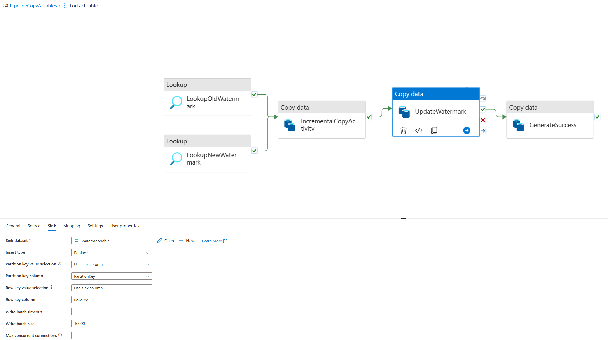
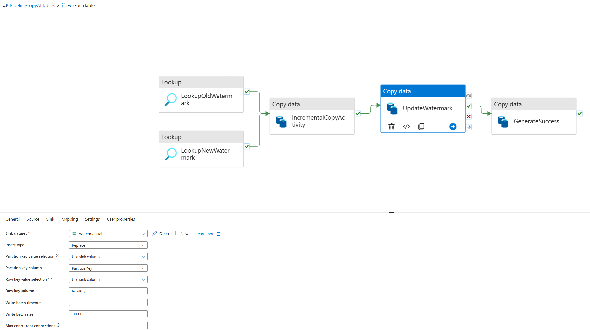
 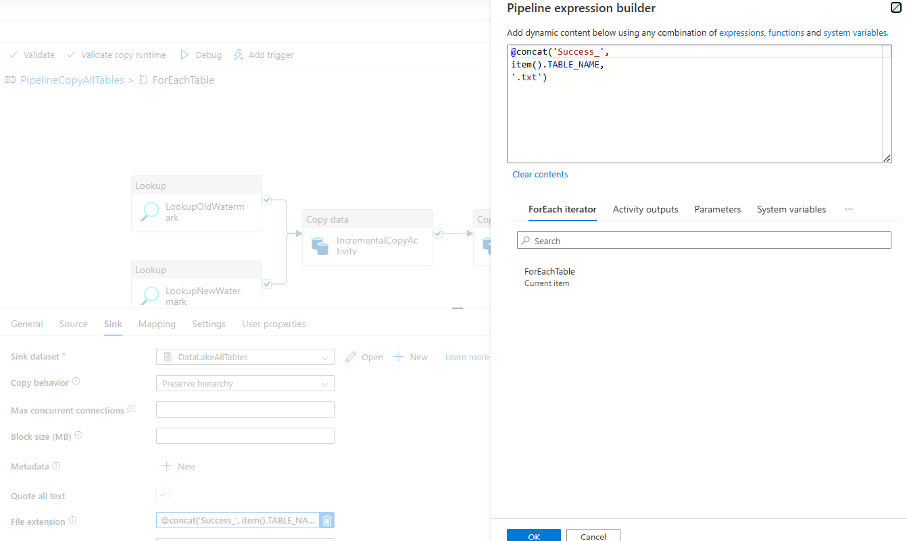
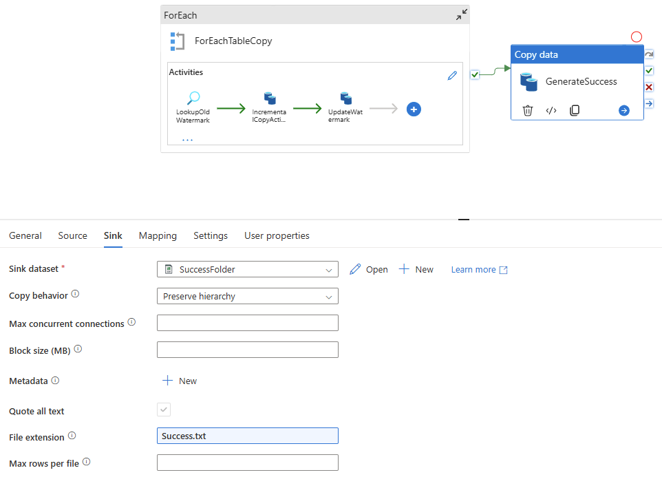
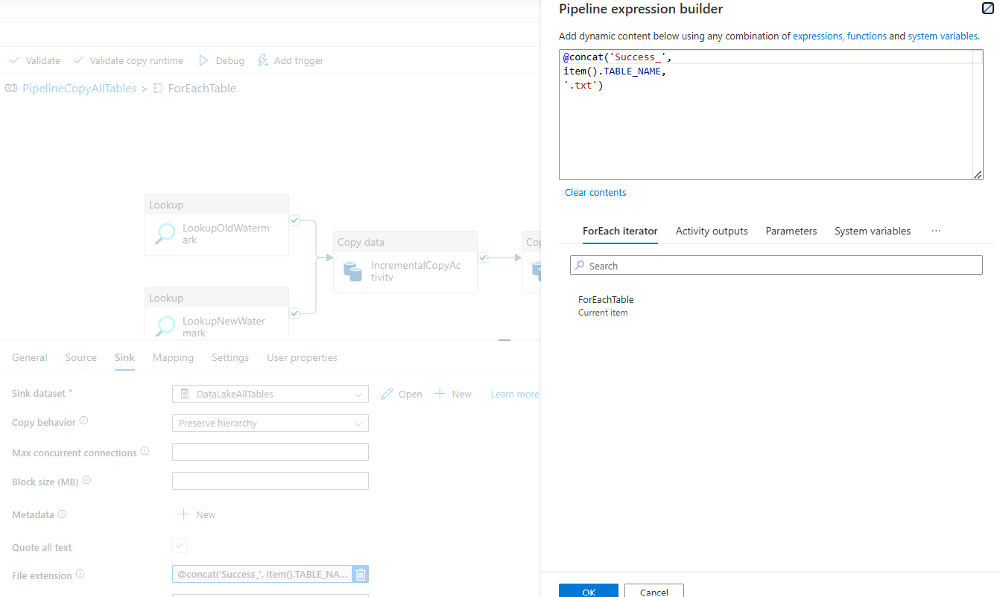
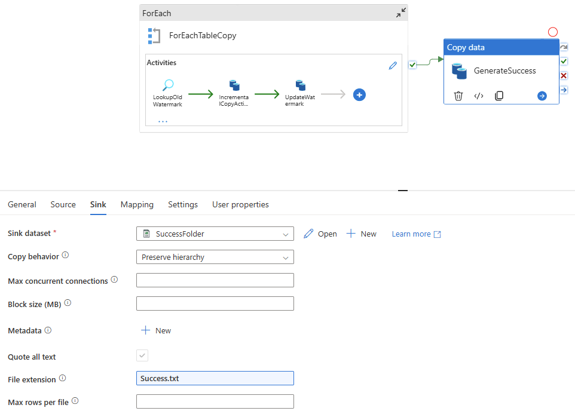
Go to your created pipeline and execute it manually. 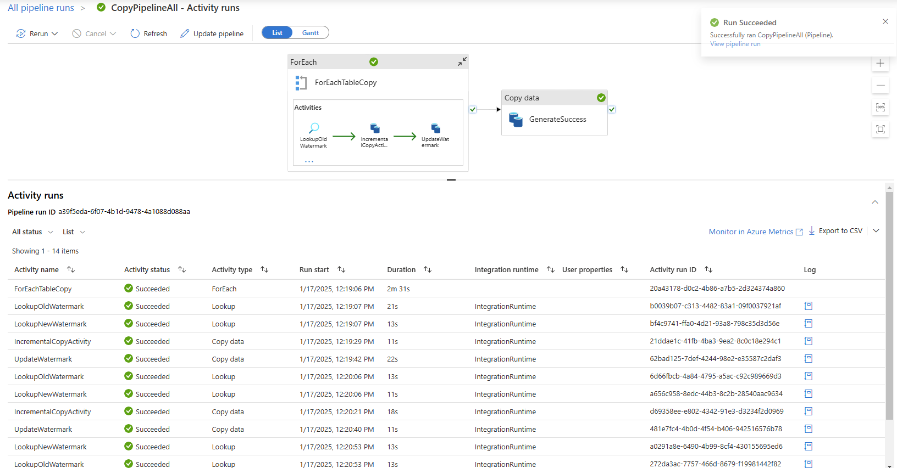
bronze/youflix folder, it should contain 4 folders and Success.csv file.Take screenshot(s) of the target folder.

Go inside each of 4 folders and take screenshot(s) of files generated.
 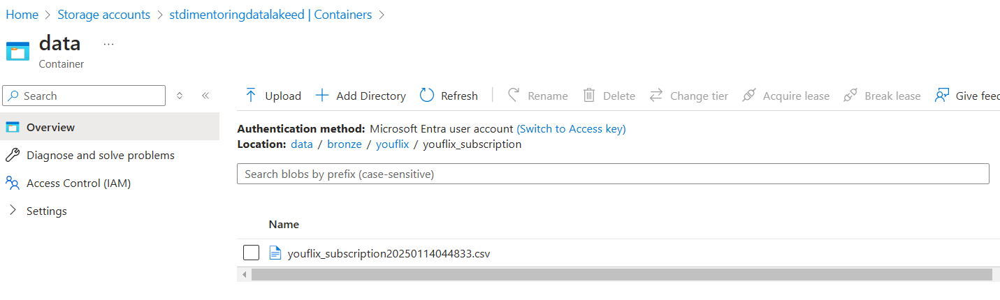
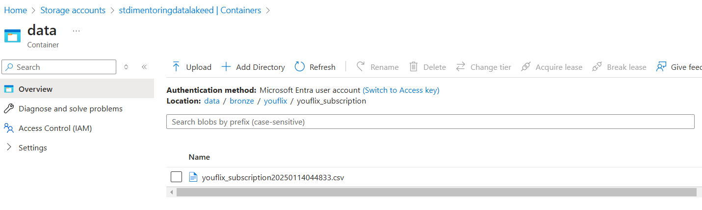

In Synapse Workspace, navigate to Data section, find in Linked tab your container, open bronze/youflix
and select top 10 rows for each file using SQL queries.
Take screenshot(s) of SQL queries and result output.


In Synapse Workspace, navigate to Data section, find in Linked tab your container, open bronze/youflix
and check number of rows for each file using SQL query.
Take screenshot(s) of SQL queries with count values.
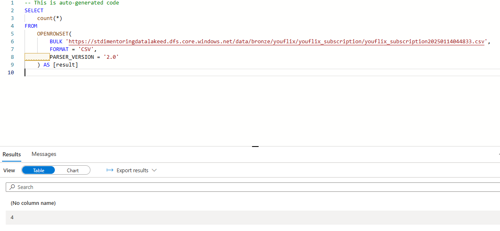
 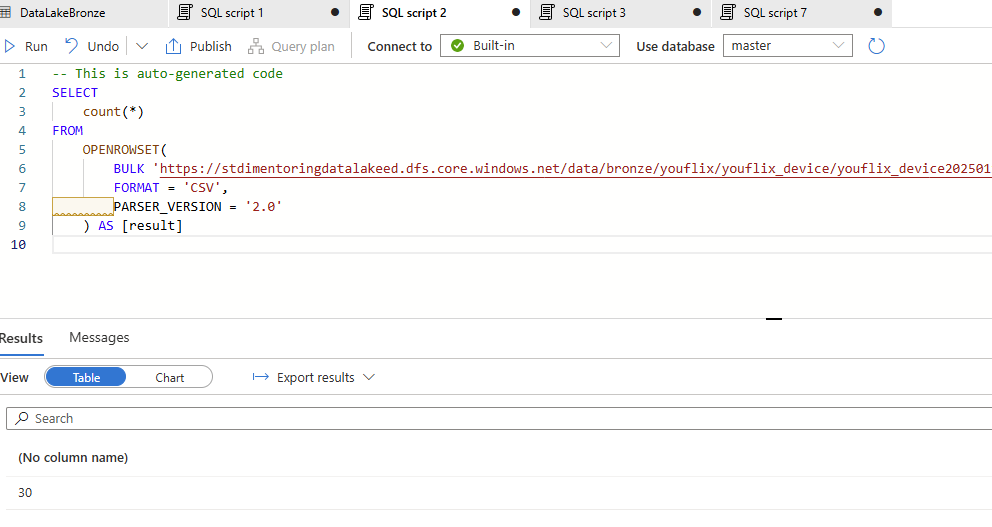
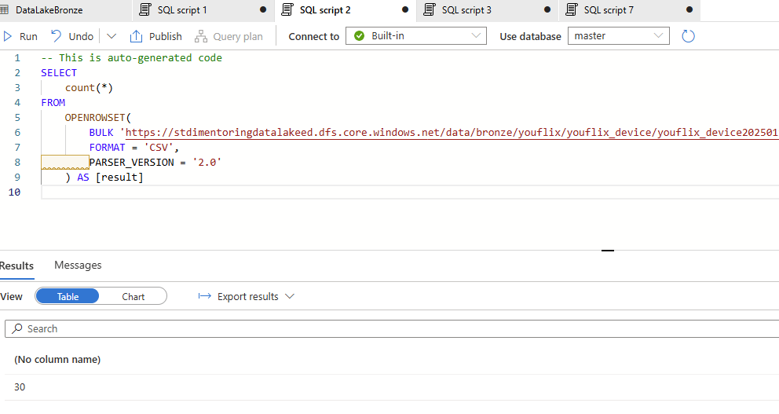
Go to your Azure Table and take a screenshot of new watermark values.

Without changing source data, execute your pipeline one more time.
bronze/youflix
and check number of rows for each newly loaded file using SQL query.Take screenshot(s) of SQL queries with count values.
 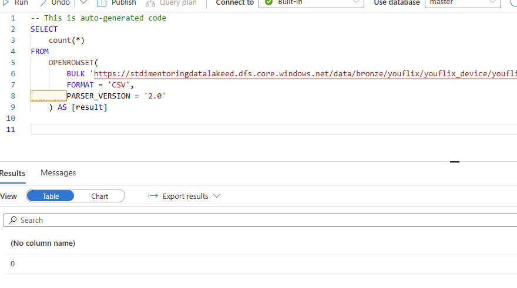
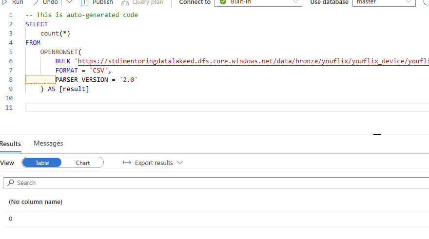

Connect to MS SQL Server YouFlixDB database and run the following command:
sql
EXEC youflix_internal.sp_youflix_tables_insert_update 10000, 15;
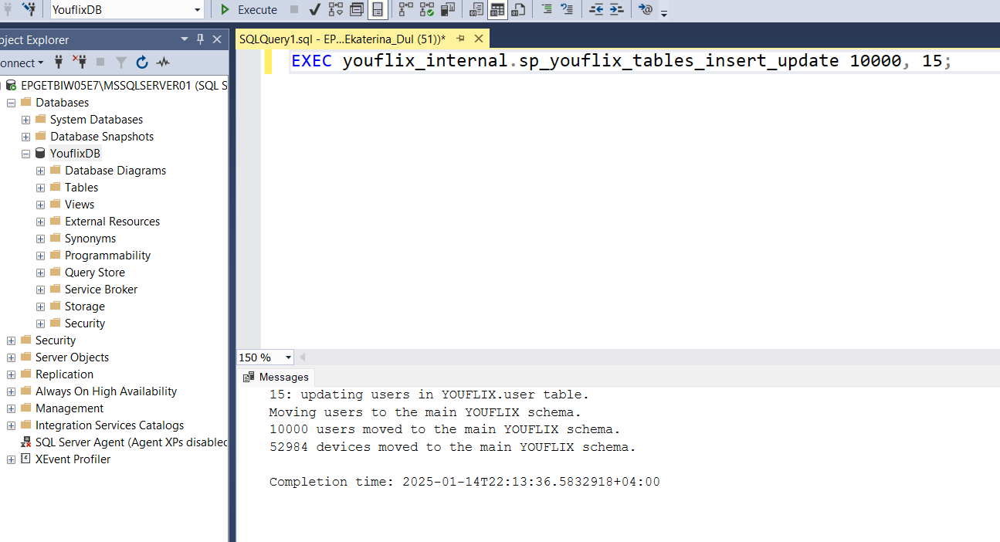
Execute pipeline manually again.
bronze/youflix
and check number of rows for each newly loaded file using SQL query.